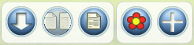

Nabú Help
Nabú Help |
| Web del proyecto: | http://nabu.pt/web |
| Para usar Nabú: | http://nabu.pt |
| Ayuda de uso: | http://nabu.pt/help.html |

| Objetivo | Define el modelo de un documento para debatir el objetivo que une al grupo. Este podr&icaute;a ser el primer debate del grupo |
| Acción | Define el modelo de un documento para debatir una acción dentro del grupo |
| Comisión | Define el modelo de un documento para debatir la creación de una nueva comisión |
| Evento | Define el modelo de un documento para debatir la organización de un evento |
| Metodología | Define el modelo de un documento para debatir la creación de una nueva metodología organizativa |
| Modelo | Define el modelo de un documento para debatir la creación de un nuevo modelo de documento |


|
No hay apoyo suficiente y hay demasiados votos en contra |

|
Hay apoyo suficiente pero hay demasiados votos en contra |

|
Se ha generado un documento de consenso y el debate queda deshabilitado y marcado en gris |
|  |
Activar/desactivar vista lateral: Podrás ver el contenido al picar sobre cualquier propuesta del árbol. Ver de documento: Podrás ver el documento en orden natural de lectura y hacer propuestas si tienes flores disponibles Agregar/Quitar flor: Te permite votar una propuesta o quitarle el voto. Este proceso consume una flor de tus flores disponibles |